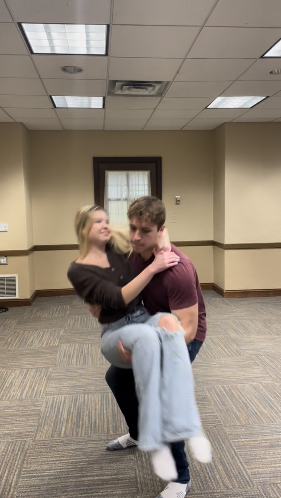
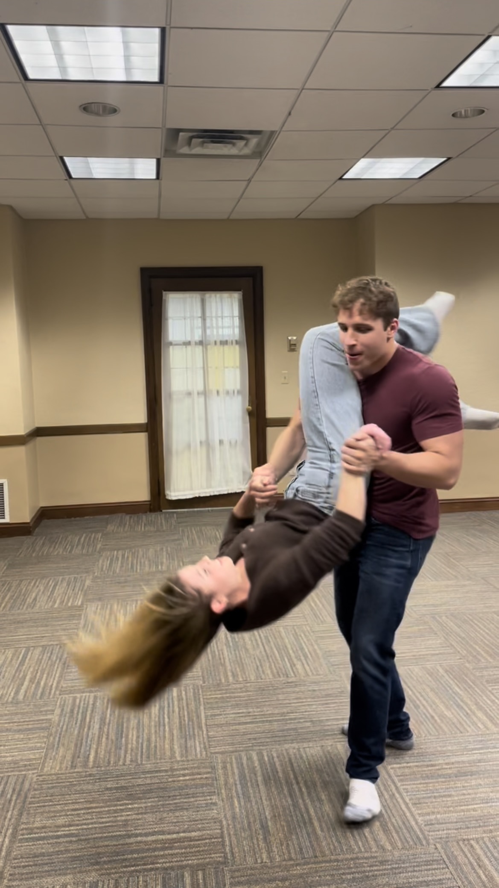
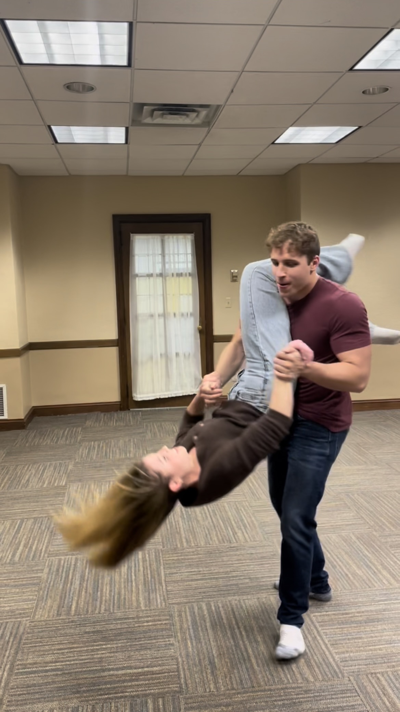

Ariels: Everyones Favorite
Ariels are any moves where the lead lifts both of the follows feet off the ground at anytime during the move. While they are fun and looks cool they are more advanced and take practice. We do teach ariels at your discretion they are by no means required and floor moves can be just as fun and cool
Can Opener
 
